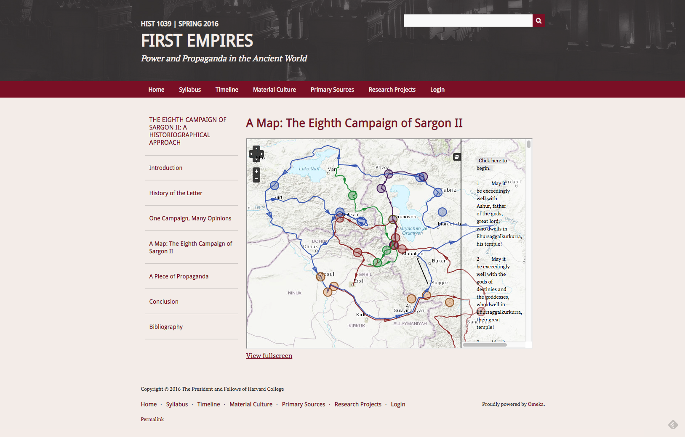
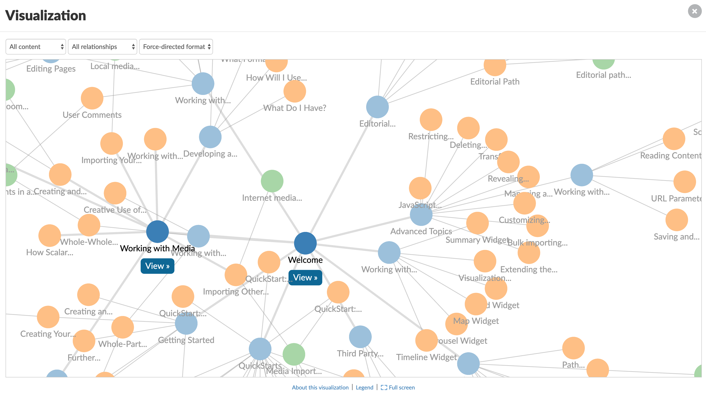
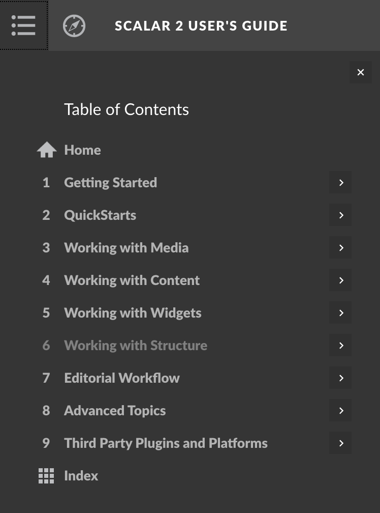

Web Publishing
| Jeremy Guillette | Jeff Emanuel |
| Instructional Technologist (AT-FAS) |
Associate Director (AT-FAS) |
Overview
- How do we publish things to the web?
- Omeka
- Overall approach
- Features
- Scalar
- Overall approach
- Features
How does stuff get online?
Content Management System
e.g. Wordpress, Drupal, SquareSpace, etc.
Omeka
Omeka Examples
demo.omeka.fas.harvard.edu
Items in Omeka
Dublin Core
| Title | Subject | Description | Creator | Source |
| Publisher | Date | Contributor | Rights | Relation |
| Format | Language | Type | Identifier | Coverage |
Collections in Omeka
Think boxes of items, described with the same Dublin Core metadata
Items can't go in multiple collections
Your turn
harvardartmuseums.org
Exhibits in Omeka
- Exhibit (http://base.url/exhibit-name)
- Page (http://base.url/exhibit-name/page1)
- Block
- Block
- Block
- Page (http://base.url/exhibit-name/page2)
- Block
- Page (http://base.url/exhibit-name/page1)
Your turn (again)
Omeka's Extra Features
Neatline
Student-created map
IIIF Toolkit
Omeka Resources
- Omeka as a service at Harvard
- Omeka user manual
- Omeka Sugar - Short, targeted tutorials
- Omeka Showcase - collection of exemplary Omeka sites
- Omeka developer documentation
Scalar

Scalar Examples
Students in Service at Harvard
Imperiia
Sound and Documentary in Cardiff and Miller's Pandemonium
Why Scalar as a Service?

Scalar Content Types
Pages
Media
Annotations
Organizing Content
Paths
Tags
Visualizations
Table of Contents
Group Activity
- Scalar Book: “Harvard in the Public Sphere”
- Find a partner and pick a person from the Wikipedia "List of Harvard University People"
- Each pair will produce a Scalar path for a Harvard alumni
- Guidelines
- The path should add Dublin Core metadata (dc:date and dc:spatial) on the path page for the figure’s birthdate and birthplace
- The path should use tags on the path page for the figure’s occupation(s)
- The path should include at least 3 pages, and at least one of the pages should use a layout other than “Basic”
- The path should include at least 4 pieces of media (of at least two different kinds, eg photo and video)
- The path will include at least one Scalar widget (Timeline, Map, Tag or Path visualization)
- The path will be added to the larger path and the Table of Contents
Explore the book
- Take three minutes to look at the work of other teams
- With a partner:
- Did other teams take different approaches to constructing paths?
- What works well in Scalar?
- What is less successful?